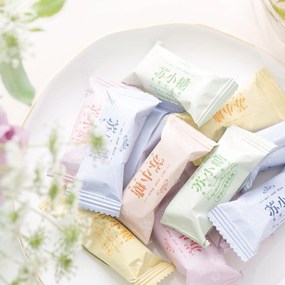
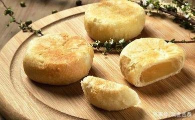
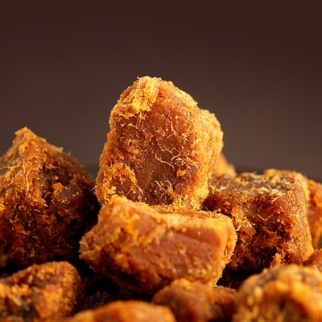
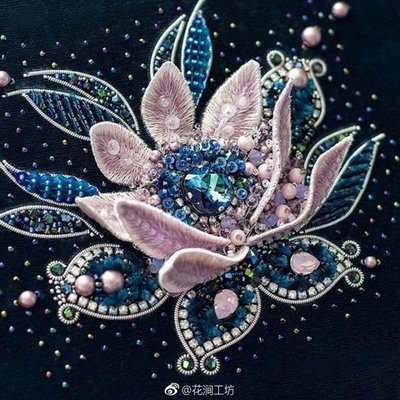
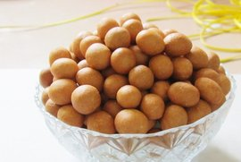

厦门购物
|  |  |
 |
| 苏小糖牛轧糖 | 姜母鸭 | 厦门馅饼 |
| 苏小糖牛轧糖让你的生活加点糖。精选优质水果原料，精工细作，只为融合你的口味。在中山路和鼓浪屿你会发现无论是车站还是路牌整个厦门都充盈着苏小糖的气息。 | 姜母鸭已经有大约3000年的历史了。是用麻油炒红脸番鸭和姜母，用烧酒焖制而成。非常好吃。目前市面上有几十个品牌的姜母鸭。银祥姜母鸭，味道正宗好吃，是伴手礼的不错选择。 | 厦门馅饼是是一款用优质面粉、猪油、上等绿豆制成的馅饼小吃。厦门馅饼分甜咸两种，甜饼豆沙馅居多，馅饼则以肉丁为馅，表皮酥脆，口感香甜酥细，口味繁多，老少皆宜。 |
|  |  |  |
| 黄胜记肉干 | 厦门珠绣 | 鱼皮花生 |
| “黄胜记”是厦门最具知名度之中华老字号，至今已有166年的历史。黄金香胜记肉松店产品工艺精湛、配料考究，质量上乘、风味独特，是人尽皆知的百年老字号，是厦门的特色旅游产品，是访亲送友的优质礼品。 | 厦门珠绣是具有独特艺术风格的装饰性手工艺品。珠绣起源于唐朝，鼎盛于明清时期，已经有100多年历史，品种繁多，绣法多样，图案优美别致。 | 鱼皮花生，是厦门生产的一种优质名牌品种，驰名中外的地方特产。 厦门鱼皮花生是花生的复制品，因制作时，做外壳用的糕粉里掺有鱼皮胶，故名鱼皮花生。 |